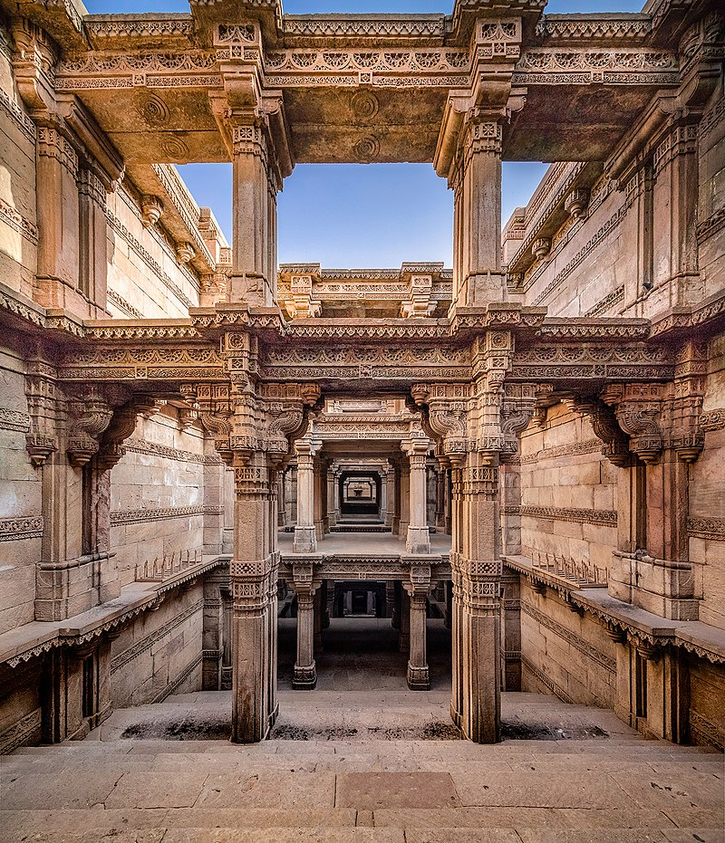
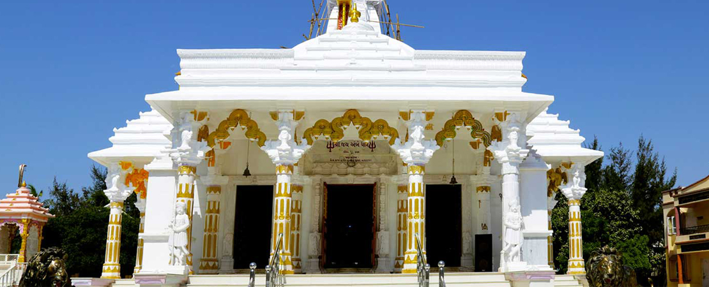
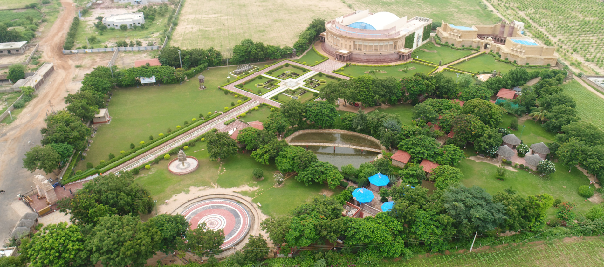
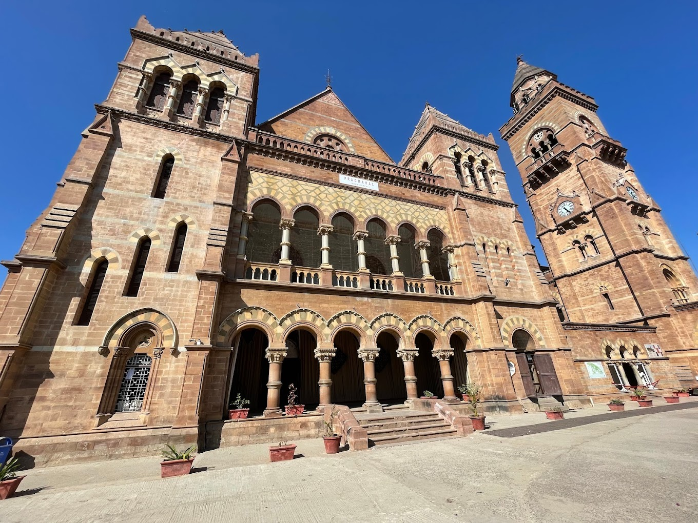
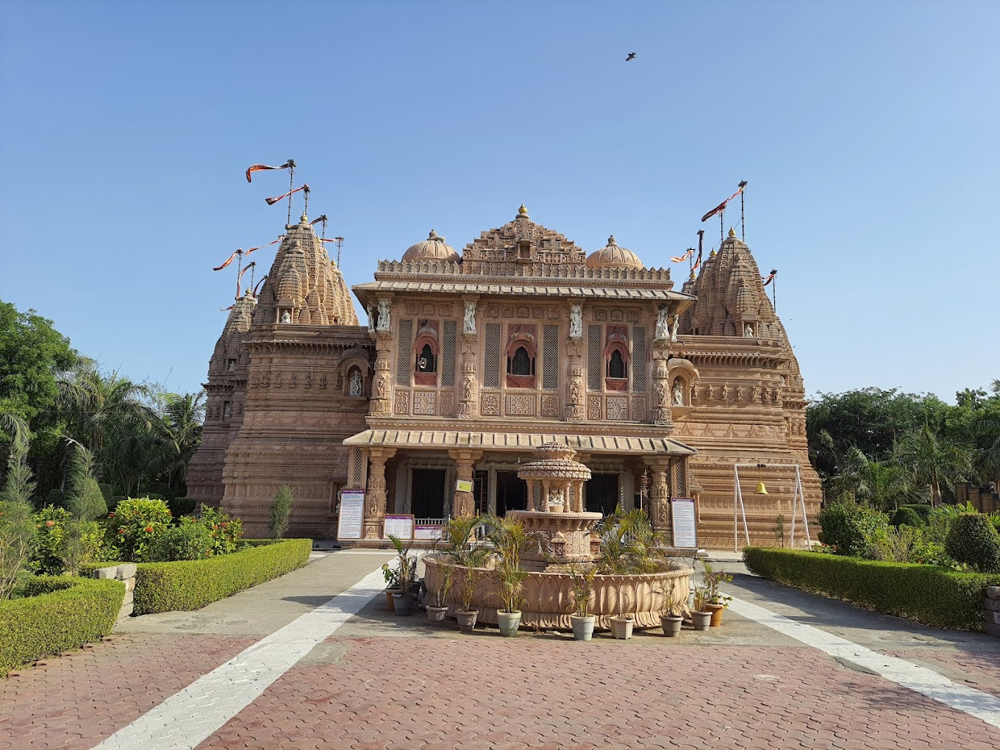

Gandhidham, formerly Sardarganj, is the largest and most vibrant megacity in Gujarat's Kutch District. It was established in the early 1950s to accommodate Sindhi Hindu emigrants from Sindh( now Pakistan) following India's division. It was named after Mahatma Gandhi, the Indian nation's father. It is Gujarat's 8th most populous city and the economic centre of Kutch, as well as a rising area for families and retirees. It is a popular convention, business, and meeting location.
|  |  |  |  |  |